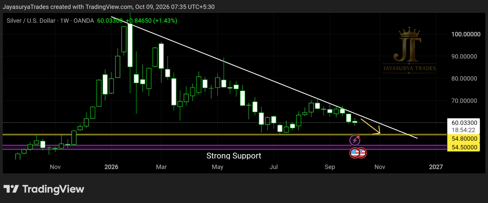

For this Friday Market Focus, I am looking at Silver / XAGUSD. From my current market view, Silver remains in a continuing downtrend. It has not yet turned into a confirmed uptrend, so I am not looking for buy setups at this stage.
The approach I am watching is to look for potential sell setups on lower timeframes, with confirmation, while the broader market structure remains bearish. The immediate support zone is 55.500–55.800. Below that, the major support zone I am watching is 48–50.
Immediate support S1: 55.500–55.800
Major decision zone: 48–50
No confirmed bullish trend yet — confirmation is required.

Current Market Structure
Silver is still in the continuation of a downtrend from my perspective. The market has not provided a clear signal that the trend has changed into an uptrend. For that reason, I do not want to assume a bullish reversal or look for buy setups before the market confirms a change in structure.
Until there is stronger evidence of a trend change, traders can focus on potential sell setups on lower timeframes, provided their own entry conditions and confirmation are present. The broader bearish view remains the main context for this analysis.
Immediate Support S1 — 55.500–55.800
The first support zone I have marked is around 55.500 to 55.800. Silver is approaching this area in the current move, and it is the immediate level I am watching next.
When price reaches this support zone, I will watch how the market behaves rather than assume in advance that it must bounce or break. The reaction around S1 will provide more information, but it will not by itself confirm a full trend reversal.
Major Support and Decision Zone — 48–50
The major support zone I am watching is between 48 and 50. In my analysis, this is an important area that could help determine whether the broader downtrend continues or whether the market begins to show signs of a possible change in direction.
Before price reaches this major zone, I cannot confidently conclude that the downtrend will continue all the way through it, or that the market will reverse. I will wait for price action and confirmation at the relevant levels before updating the view.
What Traders Can Watch
While the market remains in a downtrend, traders may watch for high-confirmation sell setups on lower timeframes rather than trying to anticipate a bottom. This is a market-structure view, not a signal to enter a trade automatically. Every setup still needs its own confirmation and risk management.
The next important observation is how Silver behaves around the 55.500–55.800 support zone. After the market reacts there, the next move may become clearer. The major 48–50 zone remains an important longer-range decision area in this analysis.
Is Silver Ready for a Buy Trend?
At present, I do not consider Silver to have entered a confirmed buy trend. A support level alone is not enough to establish that the trend has turned bullish. I will wait for the market to show a clearer signal before changing the overall view.
In next Friday’s Market Focus, I will review the reaction around the support zones and assess whether the market is showing evidence of a possible bullish turn, continued bearish movement, or sideways behaviour. That update will depend on what price actually does, not on a predetermined outcome.
Guidance for Investors
For investors who are considering buying Silver for the first time, my view is that this is not the time to rush into a fresh purchase based on the current chart structure. Silver has not yet confirmed a bullish trend in this analysis.
If you already bought Silver at higher levels, I would also avoid averaging down solely because the price has fallen. Wait for clearer evidence from the market before making that decision. This is not a personalised investment recommendation; your time horizon, allocation and ability to tolerate losses matter.
For investors also considering Gold, I would prefer to wait for the next review and for clearer market signals before deciding whether to make a fresh purchase or add to an existing position. Let Silver reach and react around the levels being watched, then reassess with more information.
Watch the 55.500–55.800 immediate support zone.
The 48–50 zone is the major decision area.
Wait for confirmation before changing the market bias or making investment decisions.
The Scenarios I Am Watching
Bearish Continuation
The current primary view remains bearish. Lower-timeframe sell setups may be considered only if the trader's own confirmation conditions are met. The next immediate area to observe is the 55.500–55.800 support zone.
Reaction at Support
When price reaches S1, I will assess the market reaction rather than predict it in advance. The reaction may provide additional information, but a temporary bounce should not automatically be treated as a confirmed uptrend.
Major Decision at 48–50
The 48–50 zone is the major support area I am watching to help assess whether the downtrend continues or whether a potential change in direction develops. The next conclusion will depend on price action and confirmation at that stage.
Key Takeaways
- Silver / XAGUSD remains in a downtrend in this analysis.
- The market has not yet confirmed a transition into an uptrend.
- Immediate support S1 is around 55.500–55.800.
- The major support and decision zone is 48–50.
- Until a clearer trend change is confirmed, avoid assuming that a buy setup is developing.
- Lower-timeframe sell setups require their own confirmation and risk management.
- Investors should avoid rushing into fresh Silver purchases or averaging down solely because the price has declined.
- Next Friday’s review will reassess whether the market is turning bullish, continuing lower, or moving sideways based on the price action then available.
My focus is on allowing the market to reach the marked support levels and then watching how it responds. I will not call a trend reversal before the market provides clearer evidence.
Respect the downtrend.
Watch the support zones.
Wait for confirmation before changing the view.
One day. One market. One focused analysis.
Levels. Structure. Scenarios. Confirmation.
No hype. Just how the market behaves.
Watch. Wait. Confirm.
Risk Disclaimer
This analysis is provided for educational and informational purposes only and
should not be considered financial advice or a recommendation to buy or sell
any financial instrument.
Trading involves substantial risk. Always conduct your own research and follow
your own trading plan and risk-management rules.